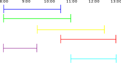
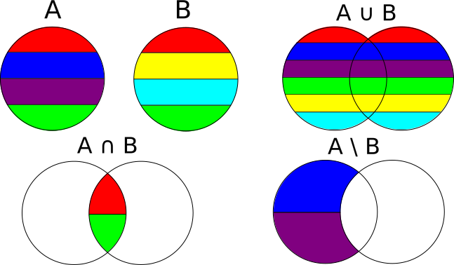

Graffärgning
Introduktion
Detta är en introduktion till det kombinatoriska området om grafer och färgningar av dem. Den försöker göra svår matematik mer tillgänglig genom att använda sig av illustrationer och mer lättförståeliga förklaringar än vad man hittar i forskningsartiklar och läroböcker. Den kommer långsamt bygga upp förkunskaperna som krävs för att förstå och tre algoritmer som löser ett problem inom det matematiska området som kallas kombinatorisk optimering.
Akvarier, scheman, och sudokun
Problemet som vi ska studera har många praktiska tillämpningar. Nedan ger vi tre exempel på problem som är relaterade till graffärgning, och vi kommer senare studera metoder för hur vi kan lösa liknande problem.
En djurpark har nyligen köpt in ett antal fiskar av olika sorter. Det visade sig dock att vissa av fiskarna föredrog att äta upp andra fiskar istället för djurparkens fiskmat. Parkens ledning bestämde sig för att det lättaste var att placera arter som riskerar att ätas i olika akvarier. De undrar nu hur många olika akvarier som måste köpas in för att kunna placera alla fiskar.
I exemplet nedan har vi sex olika sorters fiskar, med färgerna blå, grön, gul, röd, lila och cyan. Tabellen till vänster visar vilka fiskar som äter varandra. Varje par av fiskar som inte kan vara i samma akvarie har en röd kvadrat. Om fiskarna istället kan vara i samma akvarie får de en grön kvadrat. Det visar sig att det alltid går att placera in fiskarna i tre olika akvarier, men inte i två. Prova själv genom att dra fiskarna till akvarierna.
En skola ska göra ett schema åt sina elever. Man har redan bestämt mellan under vilka tider de olika lektionerna ska pågå, och nu undrar man hur många lektionssalar man behöver för att schemalägga lektionerna så att inga två lektioner är i samma sal samtidigt. 
Ovan finns ett exempel med 6 lektioner. Två lektioner kan placeras i samma sal även om den ena slutar precis när den andra börjar. Hur många lektionssalar krävs alla lektioner ska kunna schemaläggas?
Vi kan rita en liknande tabell som vi gjorde för det förra exemplet, och markera för alla par av lektioner om vi kan placera båda lektioner i samma lektionssal. Då inser vi att schemaläggningsproblemet kan lösas på samma sätt som akvarieproblemet (men inte tvärtom! Varför?). Faktum är att tabellen i det här fallet råkar bli precis samma tabell som i det exemplet. Det krävs alltså 3 salar för schemaläggningen.
Ett annat sätt vi hade kunnat komma fram till denna slutsatsen var att titta på antalet lektioner som sker samtidigt. 11:45 har vi nämligen 3 lektioner som går under samma gång: den gröna, röda och gula lektionen. Vi måste alltså ha minst 3 salar för att schemaläggningen ska kunna fungera. Vi kan nu prova oss fram för att hitta en schemaläggning som bara använder 3 salar.
Senare kommer vi lära oss bättre metoder för att hitta lösningar till problemet som inte går ut på att bara prova oss fram.
Sudoku är ett logikspel som baseras på att placera ut siffror i ett rutnät med 9 rader och kolumner, så att varje rad, kolumn, och 3x3-kvadrat innehåller siffrorna 1-9 precis en gång. Pusslet är till en början delvist ifyllt med några siffror. Pusslet går ut på slutföra ifyllningen.
Vi såg en tydlig koppling mellan de två första problemen. Men vad har sudoku-pusslet gemensamt med dem? Jo, vi kan se de 81 rutorna i sudoku-pusslet som våra fiskar, som ska placeras i 9 stycken akvarier. Att vi inte får använda samma siffra i två rader kan vi formulera som att inga två fiskar som motsvarar rutor på samma rad får vara i samma akvarie. På samma sätt får vi liknande begränsningar på raderna och 3x3-kvadraterna. Sudoku går alltså ut på att slutföra en placering av fiskar i akvarier givet att några fiskar måste vara i vissa akvarier (de siffror som redan är inskrivna i pusslet).
Mängder
Vi ska nu börja fördjupa oss i de matematiska avgrunderna som är kombinatorik. Först och främst ett lättsmält smakprov: teorin om mängder.
En mängd är nästan precis vad det låter som - en samling av objekt, så kallade element, som alla är olika. Vi kan t.ex. betrakta mängden bokstäver i det engelska alfabetet a, b, ..., x, y och z , mängden länder i norden: Danmark, Finland, Island, Norge och Sverige eller mängden som inte innehåller någonting alls. Den kallas för den tomma mängden och har den speciella beteckningen \( \emptyset \).
Oftast skrivs en mängd som dess element mellan två måsvingar. Mänderna ovan skulle då skrivas som \( \{a, b, ..., y, z\} \) och \( \{ \)Danmark, Finland, Island, Norge, Sverige\( \} \). Vi kan också blanda elementen i olika mängder. \( \{ a, b, 1, 2, \) Sverige\( \} \) är också en mängd.
Om vi har fler mängder än en, t.ex. de två mängderna \(A\) och \(B\), är vi också intresserade av hur de förhåller sig till varandra. Vi kanske skulle vilja titta på mängden som vi får om vi slår ihop mängderna. Denna nya mängden kallas för unionen av mängderna och har beteckningen \( A \cup B \). Unionen av de två mängderna \( A = \{ ko, apa, katt \} \) och \( B = \{ katt, hund, fisk \} \) blir alltså \( A \cup B = \{ko, apa, katt, hund, fisk \} \). Notera att vi inte behöver skriver \( katt \) två gånger bara för att elementet var i båda mängder.
Motsvarande kan vi beräkna mängden som består av alla element som finns i båda mängderna. Detta kallas istället för mängdernas snitt och skrivs som \( A \cap B \). Snittet av samma två mängder \( A = \{ ko, apa, katt \} \) och \( B = \{ katt, hund, fisk \} \) är således \( A \cap B = \{katt \} \).
Mängden som innehåller alla element från \( A \) men inga av elementen i \( B \) kallas för differensen mellan mängderna och uttrycks som \( A \setminus B \). Således är \( \{ ko, apa, katt \} \setminus \{ katt, hund, fisk \} = \{ko, apa\} \).
Det också ett skrivsätt för antalet element i en mängd. Detta kallas också för mängdens kardinalitet. Kardinaliteten för en mängd \( A \) skrivs som \( |A| \). Så \( |\{1, 4, 9, 16 \}| = 4 \), \( |\{a, b, c\}| = 3 \) och \( |\emptyset| = 0 \).
Om varje element i mängden \( A \) också finns i mängden \( B \) säger vi att \( A \) är en delmängd till \( B \), och skriver detta som \( A \subseteq B \). I vårt förra exempel är \( A \) inte en delmängd av \( B \), eftersom elementet \( ko \) finns i \( A \) men inte i \( B \). Däremot är mängden \( \{ apelsin, kiwi \} \) en delmängd till \( \{ apelsin, kiwi, banan, mango \} \). 
Övningar
- Beräkna mängden \( \{x, y\} \cup \{y, z\} \)
- Beräkna mängden \( \{1, 5, 2\} \cap \{2, 5, 6, 7\} \)
- Beräkna mängden \( \{lasagne, spaghetti\} \cap \{falukorv, pizza\} \)
- Beräkna mängden \( \{Sverige, Norge, Danmark, Finland\} \setminus \{Danmark, Tyskland\} \)
- Om två mängder \(A\) och \(B\) inte har några gemensamma element, hur många element har \(A \cup B\)?
- Om två mängder \(A\) och \(B\) inte har några gemensamma element, hur många element har \(A \cap B\)?
- Om två mängder \(A\) och \(B\) inte har några gemensamma element, hur många element har \(A \setminus B\)?
- Hur många delmängder har en mängd med \(n\) element?
- Är \( \{fanta, cola, zingo\} \) en delmängd av mängden läsksorter?
- Är \( \{a, b, c\} \subseteq \{a, d, e, f, c\} \)?
- \( \{x, y, z \} \)
- \( \{2, 5\} \)
- Mängderna har inga gemensamma element, så snittet är den\ tomma mängden ( \emptyset \).
- \( \{Sverige, Norge, Finland \} \)
- Unionen består av alla element från någon av mängderna, så antalet element är summan av kardinaliteten av \( A \) plus kardinaliteten av \( B \) minus kardinaliteten av \( A \cap B\), som vi ju räknade två gånger. Men \( A \cap B\) är tom, eftersom de inte har några gemensamma element. Svaret blir alltså \( |A| + |B| \).
- Enligt resonemanget ovan är \( A \cap B = \emptyset \), så \( A \cap B\) har 0 element.
- Mängderna har inga gemensamma element, så vi tar inte bort någonting från \( A \). Svaret är alltså \( |A| \).
- För varje element i mängden har vi två val: antingen är den med i delmängden, eller så är den inte med i delmängden. Detta ger oss två val för varje element. Så om vi har t.ex. 3 element har vi \( 2 \cdot 2 \cdot 2 = 2^3 = 8\) delmängder. Prova att skriva ner alla delmängder av en liten mängd. Generellt har vi alltså \( 2^n \) delmängder om vi har en mängd med \( n \) element.
- Ja, varje element i mängden är en läsksort.
- Nej. \(b\) är i den vänstra mängden, men inte i den högra. Det är alltså ingen delmängd.
Hörn och kanter
Nu när vi har koll på mängder kan vi äntligen definera vad en graf är. Med graf menar vi inte grafen till en funktion, utan något helt annat.
Grafen är den struktur som vägnät, järnvägar och datornätverk har gemensam. I stora drag har vi en mängd saker (t.ex. korsningar, städer, eller datorer) som på något sätt har ett samband mellan sig - i vårt fall kan olika korsningar vara sammanbundna av en väg, två städer kan ha en järnväg mellan sig, eller två datorer kan vara ihopkopplade över Internet. Matematiskt beskriver vi dessa samband med hjälp av två mängder som vi kallar \( V \) och \( E \).
Mängden \( V \) kallas för hörn, och består av sakerna som har samband mellan sig. Ett visst vägnät av motorvägar skulle kunna ha hörnen \( V = \{Lund, Uppsala, Helsingborg, Karlstad, Stockholm\} \).
Den andra mängden, \( E \), är den som beskriver sambanden mellan våra hörn. Varje element i den mängden är ett par av två stycken hörn och kallas för grafens kanter. I vårt exempel med motorvägar mellan städer skulle vi kunna ha en kant mellan Stockholm och Uppsala, Lund och Helsingborg, Karlstad och Stockholm, samt Stockholm och Helsingborg.
Vi kan visualisera grafer på ett väldigt naturligt sätt:
Två hörn som har en kant mellan sig kallar vi för grannar.
Övningar
- Rita en graf med dig själv och några av dina vänner som hörn. dra kanter mellan två personer om de är vänner.
- Rita den graf som har \( v = \{a, b, c, d\} \) och \( e = \{(a, b), (c, b), (d, a), (b, c)\}\).
- Hur många olika kanter kan en graf med \( n \) hörn ha?
- Rita en graf över fiskarna i problemet om akvarier. Dra en kant mellan två fiskar om de skulle äta upp varandra.
- Det finns \( \frac{n(n-1)}{2} \) olika par av noder, och vi kan ha en kant mellan varje.
- Se nästa del.
Att färga en graf
Det visar sig att problemen vi studerade i början kan formuleras rätt elegant med hjälp av grafer. I fallet med fiskarna har vi ju ett tydligt samband mellan fiskarna. Antingen kan ett par av fiskar vara i samma akvarium, eller så kan de inte det. Om vi använder detta som vårt samband, och drar en kant mellan två fiskar som äter upp varandra får vi följande graf:
Att dela in alla fiskar i akvarier är nu samma sak som att ge varje hörn i grafen ett nummer, så att inga två hörn som är grannar har samma nummer. Dessa nummer indikerar vilket akvarium en viss fisk ska placeras i. Att inga grannar har samma nummer betyder att inget par av fiskar vill äta varandra. Om du klickar på ett hörn ändras dess nummer. Ändra numrena så att inga grannar har samma nummer.
Vi kallar numrena som vi ger till varje hörn för färger (detta är alltså inte färgerna som vi ritat på hörnen). Graffärgningsproblemet går ut på hitta en giltig färgning av en graf som använder så få färger som möjligt. En giltig färgning är alltså en färgning där inga grannar har samma nummer.
Det minsta antalet färger som vi behöver för att färga en graf kallas för det kromatiska talet. Vi kommer beskriva tre olika metoder, algoritmer, som räknar ut det kromatiska talet för en graf. En intressant egenskap hos problemet är att det går snabbare att avgöra hur många färger som behövs för att färga en graf än att faktiskt hitta denna färgning.
Övningar
- Förklara varför graffärgningsproblemet är samma problem som fiskproblemet, men att vi inte alltid kan lösa graffärgningsproblemet på samma sätt som schemaläggningsproblemet (tips: vad för extra krav har schemaläggningsproblemet?)
- Bevisa att det kromatiska talet för fiskgrafen faktiskt är 3 - det vill säga, att vi inte kan färga fiskgrafen med 2 färger.
- Vad är det kromatiska talet för grafen som har alla möjliga kanter?
- Vad är det kromatiska talet för grafen som har alla möjliga kanter utom exakt 1?
- I schemaläggningssystemet måste grafen vara på ett speciellt sätt - det måste vara en så kallad intervallgraf - grafen man får av att rita kanter mellan två intervall som har minst en gemensam punkt. Alla grafer kan inte se ut på detta sätt - betrakta exempelvis grafen \( V = \{A, B, C, D\} \) och \( E = \{(A,B), (B,C), (C,D), (D,A)\}\) (en kvadrat med hörnen som kanter).
- Det finns i grafen flera tripler av hörn, så att varje hörn i triplen har en kant mellan sig (kallad en triangel). Om vi bara hade två färger skulle minst två av dessa hörn ha samma färg, men de är ju grannar. Alltså måste varje färgning med två färger vara ogiltig.
- Eftersom varje hörn är granne till varje annat hörn måste varje hörn ha sin egen färg. Svaret är alltså: lika många som antalet hörn.
- Här kan vi ge de två hörn som inte är grannar samma färg. För de övriga hörnen gäller dock av samma anledning som ovan att de måste ha olika färger. Svaret är alltså: lika många som antalet hörn, minus 1 (om vi har minst 2 hörn).
Kromatiska talet: brute force
En algoritm är en metod för att lösa ett problem. Algoritmen tar emot ett exempel på ett problem och producerar sedan ett svar. Vi kommer beskriva tre olika algoritmer för att lösa graffärningsproblemet som vi definerade i föregående del. Efter att vi definerat algoritmen samt bevisat att den är korrekt kommer vi analysera den och försöka ta reda på hur effektiv den är. Med effektivitet undrar vi hur mycket tid algoritmen kräver relativt problemets storlek (i vårt fall, antalet hörn i grafen), samt hur mycket minne den kräver. Även om algoritmer oftast körs på datorer idag använder du antagligen själv algoritmer ofta - du har nog lärt dig multiplikationsalgoritmen, som tar två tal och ger oss talens produkt. Om vi skulle analysera en sådan algoritm skulle vi t.ex. kunna mäta tiden i hur många steg du utförde för att multiplicer talen, och hur mycket minne den kräver som hur många siffror du behövde skriva ner.
Den första algoritmen använder sig av en teknik som kallas för brute force. Den går helt enkelt ut på att vi provar alla färgningar som finns och ser om de är korrekta eller inte. Vi kan skriva ner metoden lite mer formellt på följande vis:
Algoritm: beräkna det kromatiska talet med bruteforce
KromatiskaTalet := oändligheten
För varje möjlig färgning F {
Om F är en giltig färgning {
KromatiskaTalet := antalet färger i F
}
}
Svara KromatiskaTalet
Vi använder här \( x := y \) i meningen "låt \( x \) få värdet \( y \)". Vi kallar \( x \) för en variabel, som i matematiken. Men i algoritmer kan vi ändra variabelns värde medan vi utför algoritmen.
Att algoritmen är korrekt är tämligen uppenbart - vi kommer aldrig ge ett svar som är för litet, ty vi bara betraktar antalet färger hos de giltiga färgningarna. Vi kommer heller aldrig ge ett svar som är för stort. Antag nämligen att det finns en bättre färgning än den vi hittade. Men vår algoritm går ju igenom alla färgningar som var möjliga, alltså måste vi gått igenom även denna bättre färgning. Vi får alltså en motsägelse, och antaganet att det finns en bättre färgning än den vi hittade är felaktig.
Det fattas dock en viktig del av vår algoritm: vi använder oss av handlingarna "För varje möjlig färgning" och "Om F är en giltig färgning" - men vi har ju faktiskt inte specifierat metoden som vi använder för att göra detta! Så vi gör det nu.
Algoritm: generera alla möjliga färgningar
F_i: Färgen på hörn nummer i
Generera (h) {
Om h == |V| + 1 {
Vi har hittat en färgning (F_1, F_2, ..., F_|V|)!
} Annars {
För varje färg i = 1 till |V| {
F_h := i
Rekursera(i + 1)
}
}
}
Generera(1)
Vi införde här konceptet av en funktion i form av \( Generera \). En funktion skiljer sig inte så mycket från en algoritm - den tar variabler och producerar sedan ett svar.
Kromatiska talet: dynamisk programmering
PIE: Principen om inklusion och exklusion
Zeta-transformationen och Yates algoritm
Kromatiska talet: inklusion/exklusion